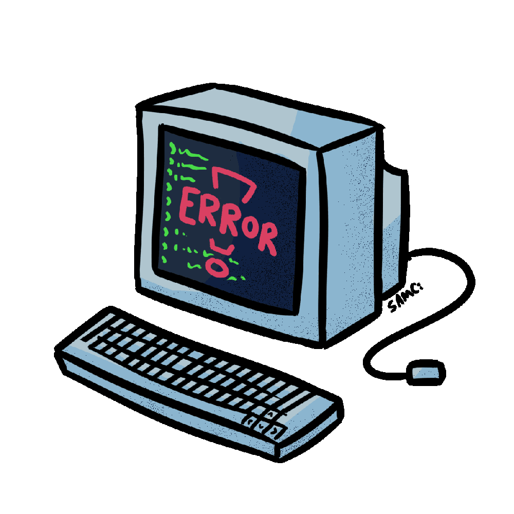

ABOUT ME

Hi! I'm Software Developer student with Front-end specialization, 21 years
old and I started in the technology area this year. I live in São
Paulo - Brazil, my passions are games, animals, art and my actual
passion is development, this career is a way to personal satisfaction.
Even with a considerably short period in the technology area, I
consider that I have evolved a lot in a short time, I entered my
current course without knowing the minimum of programming and I am
currently one of the monitors in my class, I completed several courses
and my collection of new technologies has grown. I also work as a
volunteer developer at the NGO PaisAfetivos.
See ya!